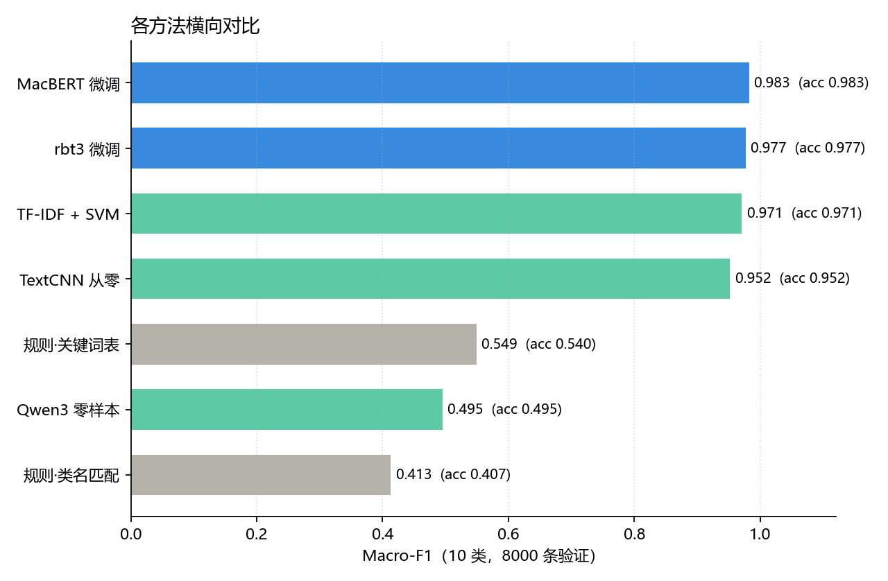
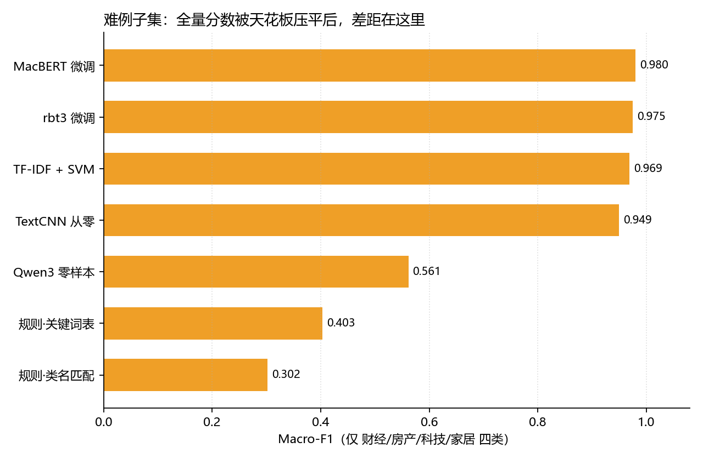
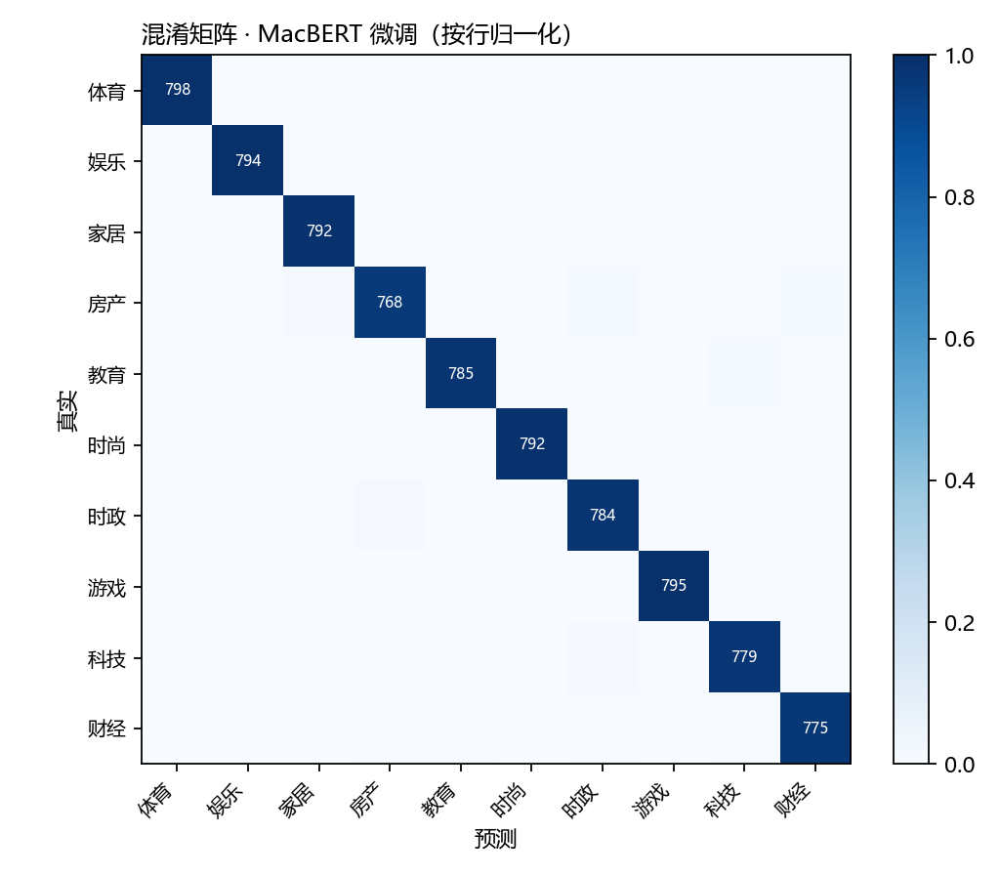
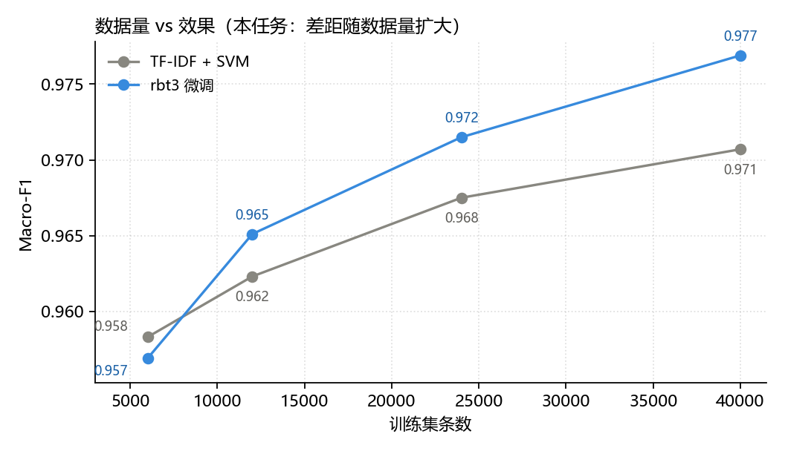

| 方法 | 准确率 | Macro-F1 | 难例四类 F1 | 参数量(M) | 训练耗时(s) | 解析失败 |
|---|---|---|---|---|---|---|
| MacBERT 微调 | 0.983 | 0.983 | 0.980 | 102.280 | 1086.900 | 0 |
| rbt3 微调 | 0.977 | 0.977 | 0.975 | 38.480 | 311.300 | 0 |
| TF-IDF + SVM | 0.971 | 0.971 | 0.969 | - | 19.400 | 0 |
| TextCNN 从零 | 0.952 | 0.952 | 0.949 | 0.840 | 31.500 | 0 |
| 规则·关键词表 | 0.540 | 0.549 | 0.403 | - | - | 0 |
| Qwen3 零样本 | 0.495 | 0.495 | 0.561 | - | - | 91 |
| 规则·类名匹配 | 0.407 | 0.413 | 0.302 | - | - | 0 |

十类全量上 TF-IDF 已接近饱和，方法之间的差距被均值掩盖。只在 财经 / 房产 / 科技 / 家居 这四类（业务上同属「金融 + 产业」，词面高度重叠）上重算 Macro-F1，才看得出谁真的更强。


固定验证集，只改训练集比例。若微调优势随数据减少而扩大，说明它赢在「预训练知识」而不是「模型更大」。

| 训练条数 | 比例 | TF-IDF F1 | rbt3 F1 | 差距 |
|---|---|---|---|---|
| 6000 | 15% | 0.9583 | 0.9569 | -0.0014 |
| 12000 | 30% | 0.9623 | 0.9651 | 0.0028 |
| 24000 | 60% | 0.9675 | 0.9715 | 0.004 |
| 40000 | 100% | 0.9707 | 0.9769 | 0.0062 |
eval/make_report.py 依据 outputs/*_pred.json
的逐条预测自动生成，结论文字也是从这些数字反推的，可复核。